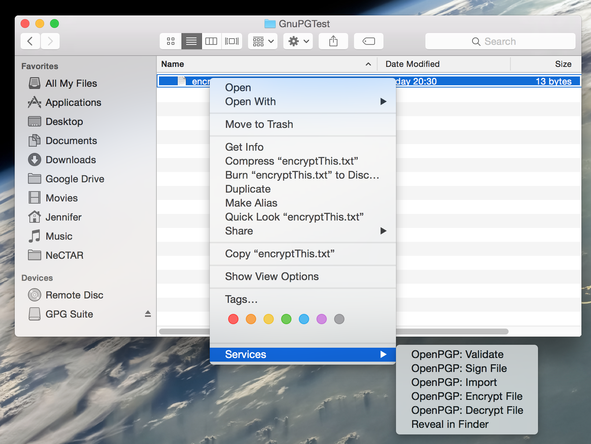
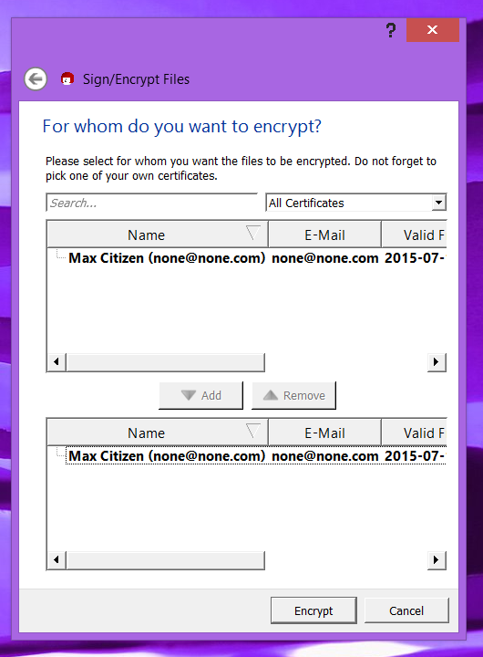

Module 8
Security
Introduction
This module provides an introduction to key security issues, dangers and consequences when running a virtual machine in the cloud. Practical advice for making your machine secure and preventing it from being hacked. An introduction to data encryption including usage of a variety of tools is also given.
Cloud computing has grown exponentially over the last few years. However security concerns are still quite common amongst those who are reluctant to adopt it. Is cloud computing safe? What are the common security concerns, and how justified are they?
We will talk about security concerns in this Module and describe how NeCTAR addresses security issues, and what you need to do to make your virtual machine safe and protect it.
Videos
The following videos go through most of the content in this module and offer a less in-depth description of the subject than the documentation does.
https://www.youtube.com/watch?v=iRyCkPVqgHA
https://www.youtube.com/watch?v=eb73lFe4lvQ
https://www.youtube.com/watch?v=emFRq7mXcbQ
Conventions
The notation throughout the training documents can be interpreted as follows:
Words in italics are used for names and terminology, e.g. name of a software, or name of a computing concept. It may also just emphasise a word in the traditional way. Quotations are also written in italics and are put in between quotatioin marks.
Words in bold are used to highlight words which identify important concepts of a paragraph, to make it easier for users to skim through the text to find a paragraph which explains a certain idea, concept or technology.

Additional information which is optional to read is displayed in info boxes like this one.

Important information is displayed in boxes like this one.

Definition of terms are displayed in boxes of this style.

Possibly specific prerequisites for reading a particular section are contained in this type of box at the beginning of a section.
The use of command line tools is part of this course. In a Terminal, you will be directed to type in commands. Commands are formatted as follows:
command-name argument1 argument2 ... argumentn
Throughout the exercises, when you see a word in pointed brackets, like <this-word>, it means that you have to replace everything inside the brackets, and including the brackets, with whatever is described within the brackets.
For example, if you are prompted to run a command named the-command which takes two arguments:
the-command -f <yourfile>
Then you have to replace the second argument, <yourfile>, with the file name that is being referenced in the exercise. For example
the-command -f thefile.txt
When editing a file, the contents of it will be displayed in a different font and with background colour as follows:
The content of the file The next line in this file
Output on the command line terminal is printed in boxes formatted as follows:
NectarInstance:~ Jennifer$ whoami Jennifer
Security concerns and benefits
The widely spread perception is that cloud computing poses a whole lot of new risks. But in fact, security can improve with cloud computing: Security is often as good as or better than in traditional systems, because the providers infrastructure is maintained by a team of experts which are looking after the data center security around the clock. Cloud providers are able to devote their resources to solving security issues that many of their customers could not afford — and evidently it is the providers top priority to keep their data center safe, or they would lose their reputation and their customers.
More trust is needed in that the administrators of cloud computing infrastructure ensure security with as much competence as any good IT department could do. Unfortunately, 100% security does not exist in IT — a security breach can happen in any organisation, whether it is a cloud provider, a research organization or a business. It is a matter of trust in which IT department can ensure maximum security best.
Perhaps the biggest security concern among cloud computing customers is data loss. Here are some figures from the Databarracks 2014 Data Health report), in which a number of small and large organisations report the causes of data loss:
-
21% Hardware failure
-
19% Software failure
-
18% Human error / accident
-
15% Corruption
-
7% Theft
-
7% Internal security breach
-
6% External security breach
-
5% Natural disaster
As the numbers show, human error is still a leading case of data loss! Internal and external security breaches are not far removed from the figures for natural disasters.
Let’s say you can trust your cloud provider in ensuring the best protection against software and hardware failures. This still leaves one very important factor in keeping your virtual machine and data safe: yourself! There are some parts which you are responsible for when ensuring the security of your virtual machine and data. This holds in particular for IaaS services (in SaaS services, the cloud provider is responsible for security control, PaaS services have shared responsibility between provider and customer). Your virtual machine is an IaaS Service, so there will be things you need to observe to make your services secure.
There are a few security issues which are particular to cloud computing, but they are usually not a major security concern, if actions are taken by the cloud provider and yourself to protect against these threats.
It is not difficult to ensure the best possible security for your virtual machine and data, but you have to be aware of which the tasks involved are. We will talk through this in this Module.
Main threats
Main threats to cloud computing are posed by the following (conforming with the Cloud Security Alliance):
-
Cyber attack: Risks include
-
a) nefarious use of cloud computing: hackers can upload malware to a public cloud and use the power of the cloud to attack other computers. For example, they may use hundreds of cloud computers to hack passwords.
-
b) Distributed Denial of Service (DDoS) attacks. Denial-of-service attacks are attacks meant to prevent users of a cloud service from being able to access their data or their applications. Clouds are of particular interest to hackers because bringing down the services affects a wide group of people. Therefore, cloud providers must invest in robust measures to protect against such attacks.
-
c) Phishing, fraud and exploitation of software vulnerabilities to get access to your data. Although most cloud providers have stringent security measures, as technology becomes more sophisticated, so do cyberattacks. Clouds also have additional vulnerabilities: Virtual switches and the hypervisor are two examples of points of attack that are not present in the traditional data center.
Protection from the provider: The team of experts at the cloud’s data center have to take measures to protect against this extra risk. Traditional technical controls such as firewalls, Intrusion Detection Systems (IDS), Intrusion Prevention Systems (IPS) or Network Access Control (NAC) products that ensure access control continue to be critical components of the security architecture.
Protection from your side: You should not install potentially harmful software on your virtual machine. Be sure you can trust the software vendor. Also, only free up necessary ports in the firewall rules!
-
-
Access to your Data: The cloud provider can potentially access the data that is on the cloud at any time. They can even be obliged to share information with third parties if necessary for purposes of law and order, even without a warrant.
Protection from you: You can encrypt data that is processed or stored within the cloud to prevent unauthorized access.
-
Data Loss & Leakage / Risks of shared access (Multi-tenancy): In a cloud provider platform being shared by different users (a “multi-tenant” platform) it is possible that data belonging to different customers resides on the same server. A few issues arise from the fact that resources (CPU, memory, etc) are shared. (a) resources can be fully taken up by one virtual machine (also called a “noisy neighbour”), effectively creating a denial-of-service-attack to others sharing the same resources. (b) data can leak from one customer to another: Researchers have been able to recover other tenants’ data from what was supposed to be new storage space. (c) If a multi-tenant cloud is not properly set up, a flaw in one clients application could allow an attacker access not only to that clients data, but every other clients data as well.
Protection from the provider: Protecting the cloud platform with good protection software and setting it up securely is a high priority.
-
Transparent Cloud Protection System (TCPS) is a protection system which is effective in detecting most kind of attacks by monitoring the VMs.
-
The hypervisor can be configured so that when it detects extreme resource consumption from one VM (the “noisy neighbour”), it can evaluate whether an attack is being made and automatically restart the problematic VM. Another way to protect against noisy neighbours is to set a resource limit (machines can only use so much) or a resource reservation (other machines cannot use resources that are reserved for another).
-
A secure infrastructure is required that ensures customers virtual machines are isolated in a multi-tenant environment. Isolation can be achieved by using virtual switches and/or VLANs for the networks.
Protection from you:
-
You can encrypt your data to reduce the impact of a data breach. However be careful, because if you lose your encryption key, you’ll lose your data as well.
-
You can keep offline backups of your data to reduce the impact of a catastrophic data loss, however be aware that this increases your exposure to data breaches (because there is a security risk at two data centers). Nevertheless, keeping physically separate backups of important data is generally recommended, as you can not protect your data on the cloud against physical disasters as fires or earthquakes leading to the data centres being destroyed.
-
When you release storage space because you don’t need it any more, make sure you securely erase all data (see also Module 9 for how to do this), so it does not leak to other tenants.
-
-
Hardware Failure and Data loss: When the hardware fails, all data may be lost, if it has not been backed up. The state of the virtual machine may also be lost. Data loss by physical damage to the data storage is a risk which exists in any data centre.
Protection from the provider: Create separate backups of all hard-drives.
Protection from you: Backup your data at regular intervals and save it at a different physical location (e.g. your organisation’s data center). Similarly, take Snapshots of your virtual machine and save them as an image on a separate hard-drive, so you can easily re-launch it. Module 9 will discuss how you can do this.
-
Data ownership: Legal ownership of the data is a risk as well. Many Terms of Service agreements do not mention ownership! There is a high risk that end users don’t know this, don’t read the many pages of the terms of service agreement, and just click “Accept”. Often, the data owner is actually the provider! There can also be a case that the data is owned by the provider only if it was created on the cloud (e.g. by a cloud application), but is owned by you if you have uploaded it. Make sure you know how your provider handles this.
NeCTAR never claims ownership of any data that is uploaded by you to the cloud. Data ownership is also completely retained by you when you create data directly on the cloud, e.g. via eResearch tools or Virtual Labs. The only owner of the data is you.
However, NeCTAR and the Research Cloud software may need to move or isolate your data in the act of operating the infrastructure on which it resides, for example if your instance poses a security threat then the instance may be suspended, which means you’ll be locked out of your data for however long it takes to deal with the incident. -
Access security: This affects authentication, access control and data encryption. It is important that access is obtained via secure connections. Nobody else except you should be able to see or access your data. What happens when the data is deleted or not needed any more, are copies still kept? Many providers are not clear on that point. Is data encrypted? If so, are the private keys shared among tenants? Be aware also that governments may have the right to access your data even if they get a warrant.
Protection by the provider: Encrypt the data and ensure complete deletion of data without keeping any copies.
Protection by you: Access your resources via secure connections only. Never share your private key with anyone, and make sure you only use ssh keys which you have created yourself (see Module 7). Be aware of whether several copies of your data are kept, and if so, request a complete deletion from the provider where necessary. Always choose secure passwords (see Module 5 “Mitigating risks”)!
-
Malicious insiders: CERT defines a malicious insider as follows (source: http://www.cert.org/):
“A malicious insider threat to an organization is a current or former employee, contractor, or other business partner who has or had authorized access to an organization’s network, system, or data and intentionally exceeded or misused that access in a manner that negatively affected the confidentiality, integrity, or availability of the organization’s information or information systems.”
-
Availability / Lack of Internet: Service interruptions can happen and they can go for hours or in the worst case even days. Another factor for loss of availability can be lack of Internet.
Protection from the provider: Ensure service availability best as possible.
Protection from you: Choose a reliable Internet Provider.
-
Insecure Interfaces and APIs: 3rd parties can create an insecure application to interact with the cloud services, e.g. to provision, manage, orchestrate and monitor the VMs through such interfaces.
Protection from the provider: Set up the cloud platform such that external software does not have privileges to provision, manage and orchestrate VMs (or only allow this for trusted software).
-
Lack of full control: Especially in ready-to-use SaaS services, customers often have no control over updates or upgrades. They can find a new version of the service was provided overnight, removing a feature they needed, or adding one that raises new security issues.
-
Insufficient knowledge: Many organisations rush into the cloud without knowing about the potential issues and risks and how to mitigate them.
Protection by you: Pay attention in this Module and you will have the required knowledge to protect your resources adequately.
VM-specific vulnerabilities
Virtual machines have a number of their own vulnerabilities. A malicious virtual machine can potentially access other instances through shared memory, network connections, and other shared resources. Fortunately, these security concerns can be addressed effectively in a well-managed cloud. Most intrusions can be prevented by the users applying traditional security measures, as we have discussed in Module 5 (“Mitigating Risks”).
Most VM specific vulnerabilities stem from the hypervisor. There are a number of different types of security breaches on the hypervisor level:
-
Hyperjacking: This involves modifying the hypervisor to be malicious, or inserting a malicious hypervisor (a “rogue” hypervisor). In theory, a hacker with control of the hypervisor could control any virtual machine running on the physical server.
-
VM Escape: A malicious program manages to “escape” out of a virtual machine and compromising the hypervisor. Then the program can assume control over all other VMs running on the physical computer.
-
VM Theft: This is the ability to steal a virtual machine file electronically, which can then be run elsewhere. It is an attack that is the equivalent of stealing a complete physical server without having to enter a secure data center and remove a piece of computing equipment.
Luckily, hypervisors are generally more secure than regular operating systems; The Hypervisor is a fairly simple program, which helps to limit such vulnerabilities.
The NeCTAR cloud uses the KVM Hypervisor with OpenStack. KVM is a good choice in terms of security. The virtual machines managed by KVM run as unprivileged processes, which makes it safe. Techniques for Hypervisor protection include sVirt, Intel TXT, and AppArmor, cgroups, and MAC Policy. KVM has all these techniques in-built. For more information, refer to the OpenStack security guide.
Regular patching of the Hypervisor is important to refresh security. Also, appropriate security policies have to be applied. The NeCTAR cloud administration team is aware of the high security demands of Australias researchers and regularly updates the systems and applies a strict security policy to ensure maximum safety.
In addition to the efforts the security team at NeCTAR are making, part of the security is also your responsibility, because not only the Hypervisor, but also your VM has to be secure (for example, to help prevent a VM Escape attack).
-
Since it is easy to restore an infected VM, many users do not go through the effort to secure them with an Anti Virus Protection. Linux, Unix and other Unix-like computer operating systems are generally regarded as very well-protected against computer viruses, but they are not immune. So better safe than sorry: Install an Anti Virus Protection. On your Linux instance, you may install the popular AVG Anti-Virus Software, see for example this Ubuntu help page which includes instructions. See also this page on ubuntu.com for a list of AntiVirus software you may install.
-
It is also very important that you regularly update your VM’s operating system to ensure it has the newest security patches, e.g. on Ubuntu this can be done with the command:
sudo apt-get dist-upgrade
Keep in mind:
Most cloud vendors do a better job securing data than their customers do. But a lot of security issues are also up to you—e.g. use a firewall and apply strict rules to it; install an anti-virus protection on your VM; use secure passwords; don’t share your private key, etc. All factors you need to observe to ensure security have also been discussed on a more abstract level in Module 5 (“Mitigating Risks”).
Security benefits of the cloud and virtual machines
The nice part is that using the cloud and a virtual machine does also comes with some security benefits.
-
Abstraction: The hardware abstraction and isolation of the virtual machine makes it much more difficult for the attacker to gain unauthorized access on the physical machine. The OS and software running on the virtual machine are not even aware it is virtual, and does not know the cloud platforms OS or hardware configuration. An attacker of the virtual machine does therefore also not know details of the cloud platform environment, therefore manipulating and compromising the machine is much more difficult.
-
State restore: It is easy to restore the state of a virtual machine: A Snapshot can be created and the virtual machine can be re-launched from this Snapshot, thereby returning to a state prior to attack or data loss. This is an easy method to remove malware and restore data.
-
External monitoring: The hypervisors runs outside the virtual machine and may also monitor for malware, in addition to the protection which is running inside the VM, e.g. the installed anti-virus protection. If the virtual machine is being monitored, and an attack is detected, then the instance can be shut down or disabled. The paradox of physical machines is that if they have a virus, they cannot reliably detect whether they have a virus. VMs do not have this problem.
-
Transience: An advantage of a VM is that it may be started remotely only when they are needed. Physical servers on the other hand often run permanently, even if they are not in use. This increases their likelihood for a malicious attack.
-
Simplicity of Hypervisors: Hypervisors are much simpler than traditional operating systems, and are therefore much easier to secure. This makes it easier for software developers to minimize bugs and vulnerabilities.
-
Off-premise data storage: Storing your data off-premise has its benefits too. If someone wanted to steal your data from the data center, they would have to break in there, which is a difficult task for itself, since data centers are well guarded. Also, they would be faced with banks of thousands of storage systems with meaningless labels on it, e.g. 1DC45-R7. They would not know where your data is stored, and which machine to steal.
-
Data availability: Object Storage (described in Module 6) has a great data integrity. Because copies of your files are spread over several physical locations, you will have access to it even if one data center has an outage.
Summary of your responsibilities
In summary, these are the things you need to look after:
-
Install an Anti Virus Protection on your instance.
-
Only free up necessary ports in the firewall rules.
-
Regularly update your VMs operating system to get the newest security updates.
-
Do not install potentially harmful software on your instance.
-
Encrypt sensitive data on the cloud storage to prevent unauthorized access.
-
Regularly back up your data (see Module 9).
-
Securely erase all data when you release your storage resources (see Module 9).
-
Always choose secure passwords! And never share your passwords or private ssh keys with anyone.
-
Be aware of the risks: Carefully read through the information and advise given in this Module which helps you to avoid potential security problems.
-
[optional] Keep off-line backups of your important data—however only do this if you can store the backups at a safe place.
Deployment Models
There are several deployment models for a cloud which all imply different levels of security (Source: NIST definition of cloud computing):
-
Private cloud: Private cloud services are owned by an enterprise or organisation. A Private cloud can be built on existing on-premises or off-premises computing infrastructure. Private cloud installations are in part motivated by users’ desire to retain control over the infrastructure and avoid losing control of information security.
-
Public cloud: A public cloud provides computing services that are publicly accessible (with a login, of course) over the Internet.
-
Hybrid cloud: A Hybrid cloud is a mixed deployment model, employing both private and public infrastructures. A hybrid cloud is mostly used for outsourcing processes and/or data to a public cloud while maintaining sensitive data inside a local private cloud.
-
Community cloud: Multiple organisations with common concerns, such as security requirements, policy, interests, and/or missions, may share cloud infrastructures across administrative domains to form a community cloud.
The private cloud is owned by a single organization and public clouds are shared on a larger scale.
Private and community clouds are regarded as more secure because they provide more control for the organisation(s). However setting up a private cloud infrastructure comes at a significant expense. A public cloud is instead more flexible and is often a more affordable investment for end users, however control of the cloud infrastructure is in the hands of the cloud provider, which can be seen as a security issue. Therefore, it is of high priority to public cloud providers to build and maintain strong management of secure services. Many small businesses cannot afford such efforts and therefore it is often safer for them to use the cloud services.
The NeCTAR Research Cloud can be characterized as a community cloud.
File and Volume Encryption
For several reasons discussed earlier, you may want to encrypt your file. We can broadly distinguish two types of file encryption: 1) encrypting an entire volume and 2) encrypting individual files.
Object storage (discussed in Module 6) is very useful for ease of access and data integrity. Because several copies of your data is kept, availability is very good: The NeCTAR Object Store is geodistributed across Nodes of the Research Cloud so that availability is not reliant on any one datacentre or network infrastructure. Only you have access to your object store using your OpenStack credentials, so only you can select files to download, or upload files to a container.
While access to your Object Store is secured with your credentials, the transfer of your files via the network is not necessarily secure: When you upload and download files, it happens via an unencrypted connection (unless you explicitly use a secure client, e.g. an SFTP client). At the time when you download or upload your files, somebody could catch the data you are transferring via the Internet. Also, when your files are replicated across NeCTAR nodes, this happens without encryption.
The critical point is the moment of data transfer.
Extensions to OpenStack (the cloud software that NeCTAR is using) for object storage data encryption have been proposed and will probably be available at some point.
For this reason, you may want to encrypt sensitive data before you upload it to the object storage. With the Object Storage, you upload individual files, so you should do a per-file encryption.
If you want to protect your data on a Volume against breaches (someone gaining access to your volume), you may want to do an entire volume encryption on the volume which you have attached to your VM.
There are many tools for data encryption available. Not all of them support both per-file and whole volume encryption. When choosing a tool for encryption, it is also important that the encryption algorithm used by the tool is secure and cannot be hacked easily.
In this section, we will go through a few example tools for file and volume encryption.
File encryption
In the following we will discuss the following tools which support per-file encryption:
Other widely known tools which have recently received bad security audits (e.g. EncFS, OpenSSL, TrueCrypt) are not discussed in this course.
More detailed instructions are given for GnuPG, while the description of the other tools refers to related documentation.
GnuPG
GnuPG is an implementation of Pretty Good Privacy (PGP). PGP has excellent security:
“To the best of publicly available information, there is no known method which will allow a person or group to break PGP encryption by cryptographic or computational means.”
– source: Wikipedia.
GnuPG is open-source and accessible through a variety of different clients and tools. New versions of PGP are released periodically and vulnerabilities are fixed by developers as they come to light. There is a simple command line interface, but there are also many graphical interfaces available which are more popular.
The official releases can encrypt
-
Files
-
Entire volumes
-
Disk images
-
External drives
-
E-mails
-
and more.
All GnuPG tools support multiple encryption types and ciphers.
GnuPG works very well on almost all 32 and 64 bit platforms. It has mainly been developed for Unix systems, but binaries available for Windows, OS X, Debian/Ubuntu, Android and more provided (with no guarantee that binary versions provided are current). Mac users may be interested in GPGSuite.
GnuPG is easy to use and if you keep your private key and the passphrase secret, it is a very secure way to encrypt files. GnuPG also has the advantage that no passwords will appear in any script files if you use your private key to encrypt files.
GnuPG Quick HowTo
You will have to generate a key pair before you can use GnuPG. In the process, you need to specify your E-Mail address (because you can use GnuPG for encrypting E-Mails). Choose the one you usually use, but you can also specify any address and change this later.
- Mac OS X:

- Download GnuPG from the official website. Download the “binary release” installer (or get the “source release” and follow installation instructions on the website). If you have the choice, select the GnuPG stable or modern installer and install the software.
- Open the “GPG Keychain” application (find it with spotlight search).
- Click on “New” to generate a new key and specify your name, E-Mail and passphrase.
- Hit “Generate”. Your new key will be listed in GPG Keychain after it has been created.
- Windows:
- Download and install the graphical interface to GnuPG “GpGForWin” from www.gpg4win.org. Make sure Kleopatra is checked.
- Open the Kleopatra application which you may find with the app search field or via Start > Gpg4win > Kleopatra.
- Go to File > New Certificate and select to create a personal OpenPGP key pair.
- Linux:

- GnuPG may be available as a package in your distribution. For example in Ubuntu, you may install the Gnu Privacy Assistant in the package gpa, which includes GnuPG and a graphical interface:
sudo apt-get install gpa
Or you may install command-line tools only:
sudo apt-get install gpnupg
If it is not in your package manager, you can download GnuPG from the official website. - Start up gpa. You may receive an error about not having a key yet. Close this window and confirm to generate your first key now. Enter your details and follow the instructions in the wizard.
- Alternatively, create a key in the command line.
gpg --gen-key- Specify your choices in the command line. Ideally, choose RSA, and a “Real name” without whitespaces.
- If there is an error about not enough random bytes, you may solve it by starting up an application which takes a lot of cpu time. Or, you can simulate “lots of work” with the rngd tool:
sudo apt-get install rng-tools
sudo rngd -f -r /dev/random
In a new terminal:
gpg --gen-key
When the key generation is finished, cancel the rngd application in the other terminal with [Ctr+C].
- You can find more useful information on the ubuntu help page.
- GnuPG may be available as a package in your distribution. For example in Ubuntu, you may install the Gnu Privacy Assistant in the package gpa, which includes GnuPG and a graphical interface:
Two keys will have been generated: A public key which is used for encryption, and a private which is used for decryption.
To encrypt a file, you must have the public key which you want to use for encryption. You have just generated one in the last step.
- Mac OS X:

- Open the Finder and right-click on the file you would like to encrypt.
- Select Services > OpenPGP: Encrypt file.
- Select your key in the list and click “Ok” (you may also choose several keys).
- A new file with the same name but ending with .gpg will have been created in the same folder.
- Windows:

- Open the Windows Explorer and right-click on the file you would like to encrypt.
- Select Sign and encrypt.
- You may keep the default options in the dialogue, which is set on Encrypt by default. Confirm with Next.
- Select your key in the list and click “Add” to add it to the list (you may also choose several keys).
- Click “Encrypt” to encrypt the file, and close the confirmation window with “Finish”.
- A new file with the same name but ending with .gpg will have been created in the same folder.
- Linux:
- Files are encrypted and decrypted in the command line. You have to specify a recipient, which is either you (name or email you chose for the key), or someone you want to send the file to (you need to have their public key then):
gpg --output <encrypted-file.gpg> --encrypt --recipient <user> <file-to-encrypt>
- Files are encrypted and decrypted in the command line. You have to specify a recipient, which is either you (name or email you chose for the key), or someone you want to send the file to (you need to have their public key then):
To decrypt a file, you need to have the private key of the intended recipient (when the file was encrypted). So the encrypted file will have to be encrypted for the name associated with one of your private keys.
- Mac OS X:
- You just have to double click on the .gpg file and it will prompt for the password.
- Alternatively, you may decrypt it via right click > Services > OpenPGP: Decrypt file.
- You will be asked for the passphrase.
- You can find the decrypted file in the same folder; the name may have been extended with a number in order to prevent overwriting the original file.
- Windows:
- You may decrypt by right clicking on the file and selecting Decrypt and verify.
- You will be asked for the passphrase.
- Note: it is best if you change the output folder in order to prevent the original file to be overwritten.
- You can find the decrypted file in the same folder (or specified output folder).
- Linux:
- Similar to encryption of a file, using the command line.
gpg --output <decrypted-file.gpg> --decrypt <file-to-decrypt>
- Similar to encryption of a file, using the command line.
You can find more useful information about file encryption on the GnuPG manual pages.
AESCrypt
AESCrypt is a free, open-source tool which is available for Mac, Linux and Windows. It provides a secure way to encrypt individual files, using the industry standard Advanced Encryption Standard (AES).
AESCrypt is easy to use: On Windows, you only right-click on a file, select AES Encrypt (or Decrypt) and enter a password. On a Mac, you drag the file into the AESCrypt program and type in the password. On the Linux command line, you may use the command aescrypt along with the name of the file and the password.
The AESCrypt website provides an excellent documentation on how to set up and use AESCrypt.
Encrypted zip file
Zip files can be password-protected, but the standard Zip encryption scheme is extremely weak. If your operating system has a built-in way to encrypt zip files, you probably shouldn’t use it. You should use AES-256 encryption. The tools discussed in the following do support AES-256 encryption.
Zip files are archives containing individual files, so this cannot be used to encrypt entire volumes.
The older zip encryption is not secure! Several tools can create encrypted zip files (the older, insecure version).
For example,
-
On Windows, you can right-click on a file and select Compress… to create a zip archive.
-
On Linux or Mac, this can be done via command line:
zip -0 -e backup.zip <yourfile>
The option -0 means “store only” and don’t compress — this is faster. -e means encrypt archive.
It will ask for the password.
This is not secure!
Use the more secure methods described in this section.
Windows: 7-zip
7-zip is great for compressing files and is also a strong file encryption tool. It’s free even for commercial use and supports 256-bit AES encryption. The official download is Windows only, but there are also unofficial Linux and OS X versions.
In 7-Zip, you can select files in the Windows Explorer window, right-click and select 7-Zip > Add to archive. You should make sure to select the Add to archive option in order to encrypt the file. You will be given the option to set a password, make sure you select one! Alternatively, you can open the 7-Zip application and create the archive from there.
7-Zip will create a 7z archive by default, but you can also choose Zip. If you do opt to go with Zip, be sure to select the AES-256 encryption method instead of the weaker ZipCrypto method.
Mac: Keka
With Keka, you compress individual files by dragging and dropping them to Keka in the Dock. You may drop multiple files at once, and they will be compressed as one zip file. You can get Keka from the Mac App Store, here is good documentation on the website on how to use it.
Keka creates encrypted 7z files.By default, the 7z *files will be encrypted using *AES-256, which is secure. If the selected format is Zip, Zip 2.0 legacy encryption will be used, so this is not recommended!
Linux: p7zip
The file explorer on your Linux desktop can be used to create encrypted 7z archives. You first need to install the p7zip-full package (it may also simply be called p7zip on some Linux distributions). Installing p7zip-full allows your file explorer encrypt your files or folders in the 7z compression format. You may find it in your package manager, e.g. on Ubuntu
sudo apt-get install p7zip-full
Then, open your file explorer, right click on the file and select Compress…. Be sure to select 7z as a format! In the window that comes up, expand Other Options, tick encrypt the file list too and type in your password.
You may also use p7zip in the command line. The command is simply called 7z. Refer to the man pages for usage.
p7zip does not store the owner and group of a file. So if you want to use it for backup purposes (or for other reasons want to preserve owner/group), you should pack your files in a tar archive first, and then encrypt the tar archive with p7zip.
To create a tar archive:
tar -cf <tar-file-name>.tar <list of your files or folders>
To extract a tar archive:
tar -xf <tar-file-name.tar>
Then, compress the tar archive file with p7zip as described.
Volume encryption on Ubuntu
Because we base our instances in this course on Ubuntu, we shall also include instructions on how to encrypt a volume in your Ubuntu virtual machine.
In Module 7, we have seen how we can use our secondary disk of our ephemeral storage to store our data (the secondary disk is essentially a volume storage which is included with the instance). We have also created a Volume storage and attached it to our instance. In both methods we have mounted the disk so that we can access it from our instance.
Disks which are mounted on the instance are suitable for Volume Encryption. You can encrypt the whole block of storage, and all files which are written on it will automatically be encrypted. Files on it will be unreadable to others which may gain access to it, even after you delete your storage (or discard your instance).
You can think of volume encryption as happening in the background: You unlock it once with the password, and then use the drive as usual: editing, copying and moving files on it. All programs can access the drive as usual—Ubuntu takes care of automatic encryption and decryption in the background.
Before you decide to encrypt your Volume, you should consider carefully whether you want to do this. While encrypting the data adds security in terms of preservation of privacy, it also incurs new risks:
- If you ever forget your password, access to your data will be lost forever.
- It may also introduce difficulties with manual data recovery.
- You can only unlock your drive using the same encryption algorithm/tool.
- You should also take into account that performance of reading and writing to your Volume will degrade with the encryption.
You may ask yourself whether you will also be able to copy data onto the encrypted drive from remote, for example using the scp command or an sftp client.
You can access the drive from remote as usual. This is because the file server on your instance (e.g. the scp server) takes care of transferring the files to your remote computer after you have requested them. Programs running on Ubuntu (including the file server) can read the files from the drive as usual, because Ubuntu automatically takes care of the encryption/decryption in the background.
For this reason, you can access the files, even though they are encrypted on the actual harddrive.
Note however, that if you can copy and read the files as usual from remote, so can everyone who may gain access to your private ssh key and passphrase! The volume encryption mainly serves as security in case the physical hard-drive gets stolen, or hacked into from outside your VM – then, nobody can ready your data, because they would have to type in your volume encryption password first.
In the following, we will go through the steps required to encrypt your Volume storage on your Ubuntu instance. We will use a standard procedure on Linux to encrypt drives with the Linux Unified Key Setup (LUKS).
Tipp: You can use the same instructions below to encrypt your external USB Drives from a Ubuntu system. However, note that your USB drive will most likely then only be readable from a Linux system!
Following the instructions will erase all data on the volume! If you have any files on it, make sure to back them up first.
-
Find out the device name of your volume (e.g. /dev/vdc). You may for example use
sudo lsblk -land/or
sudo lsblk -f
to print information about your drives. You can also see it on the Volumes overview in the Dashboard.
The following will assume your drive is located at /dev/vdc. If your is at another path, you will have to replace this in the following commands. -
Ensure your volume is attached to your instance, but not mounted.
Find out if your volume is mounted:
mount | grep vdc
If it is, unmount it with
sudo umount /dev/vdc -
If you have data on the volume, now is a good time to securely erase it. We will talk about securely erasing all data in Module 9. If in doubt, you should use an empty (newly created) volume for this tutorial. You can skip this step if you don’t have data to securely erase — a process which may take a long time depending on the size of your volume. Erase your data with:
sudo dd if=/dev/urandom of=/dev/vdc
Note: Module 9 provides more information about the dd command. -
Now, install the file encryption package cryptsetup:
sudo apt-get install cryptsetup
sudo modprobe dm-crypt
From now on, every time you restart your machine, the encryption software should start up automatically. - Now you can encrypt your Volume:
sudo cryptsetup luksFormat -c aes-xts-plain64 -s 512 -h sha512 -y /dev/vdc
It will ask you to confirm that you really want to do this, as all data will be erased. You should confirm this with typing “YES” (it needs to be uppercase! Or the command will do nothing).
You should then be prompted for a password – make sure to choose a secure password, otherwise the encryption will not be secure!
The parameter -c is used to select the algorithm. -y ensures that you are asked to verify the password, which is always a great idea, in case you have a typo in your first try. -s determines the length of the key — 512 actually corresponds to 256 bit encryption. The reason is that the maximum length of 256 bits is used for both AES and XTS encryption. The more bits are used for encryption, the more it will affect performance. If you would like to trade off a bit of security against performance, you can use -s 256 instead, which then corresponds to 128 Bit encryption.
-
Now you can map your encrypted drive to a virtual drive with the following command (you may replace MySecureDrive with any name you want to assign to the drive):
sudo cryptsetup luksOpen /dev/vdc MySecureDrive
This will ask for the volume encryption password which you just chose. After the command has been executed, your drive will be mapped to /dev/mapper/MySecureDrive (or other name instead of MySecureDrive, if you changed this in the command above). -
Now it is time to format your drive (again, replace MySecureDrive with your name, if you have chosen another).
sudo mkfs.ext4 /dev/mapper/MySecureDrive -
That’s almost done! Now we can mount the drive to any directory. In this example, we will create a new one /MyMountedDriveedDrive, but you can choose any other directory:
sudo mkdir /MyMountedDriveedDrive
sudo mount /dev/mapper/MySecureDrive /MyMountedDriveedDrive - Optional: By default, you do not have write permissions on the secondary drive. We discussed how to change write permissions in Module 7. Here a brief reminder: You can do this either with
sudo chown ubuntu /data
to allow access only to yourself, or
sudo chgrp ubuntu /data
sudo chmod g+rwx /data
to allow access to your whole user group.
You are all done!
You can now use this drive as normal without worrying about encryption, and your data is securely encrypted.
To unmount and free up the volume, type the following commands:
sudo umount /MyMountedDrive
sudo cryptsetup luksClose MySecureDrive
After every reboot of your instance, you will have to unlock the drive by typing in your password and mount the drive again:
sudo cryptsetup luksOpen /dev/vdc MySecureDrive
sudo mount /dev/mapper/MySecureDrive /MyMountedDrive
Summary
Congratulations!
You are now finished with this Module. You should now be aware of general security concerns in the cloud, and know how risks can be mitigated by the cloud provider and by you. Deployment methods of cloud services (SaaS, PaaS, IaaS) and how they affect security have been introduced. Practical advice has been given for hardening a machine: passwords and passphrases, updates/patches, blocking ports, etc. Finally, this module has also provided some hands-on exercises on how to encrypt data (both individual files, and entire volumes on the instance).
In summary, this module has covered:
- Common security concerns when using the Cloud.
- How cloud provider and the user can mitigate such risks
- Cloud deployment models
- File and Volume Encryption
You are now ready to continue with Module 9.